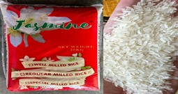
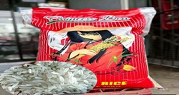
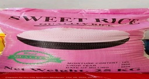

RRJ Rice Business
High-quality grains from around the world. Clean, fragrant, and cooks perfectly every time. Great value for money!

Jasmine
Jasmine Fragrant, long-grain, cooks up soft and separate.
₱1,600

Princess Bea
Imported fragrant rice with long grains. Cooks soft, sticky, and tasty.
₱1,600

Sweet Rice
Premium glutinous rice. Soft, sticky, and chewy. Perfect for kakanin, desserts, and Asian dishes.
₱1,500